Protein Hunter: exploiting structure hallucination within diffusion for protein design
Abstract
1 Abstract Interactions between proteins and other biomolecules underlie nearly all biological processes, yet designing such interactions de novo remains challenging. Capturing their specific interactions and co-optimizing sequence and structure are difficult and often require extensive computation. We present Protein Hunter, a fast, fine-tuning-free framework for de novo protein design. Starting from an all-X sequence, we find diffusion-based structure prediction models hallucinate reasonable looking structures that can be further improved through iterative sequence re-design and structure re-prediction. This lightweight strategy achieves high AlphaFold3 in silico success rates across both unconditional and conditional generation tasks, including binders to proteins, cyclic peptides, small molecules, DNA, and RNA. Protein Hunter also supports multi-motif scaffolding and partial redesign, providing a general and efficient platform for de novo protein design across diverse molecular targets.
1 Abstract
Interactions between proteins and other biomolecules underlie nearly all biological processes, yet designing such interactions de novo remains challenging. Capturing their specific interactions and co-optimizing sequence and structure are difficult and often require extensive computation. We present Protein Hunter, a fast, fine-tuning-free framework for de novo protein design. Starting from an all-X sequence, we find diffusion-based structure prediction models hallucinate reasonable looking structures that can be further improved through iterative sequence re-design and structure re-prediction. This lightweight strategy achieves high AlphaFold3 in silico success rates across both unconditional and conditional generation tasks, including binders to proteins, cyclic peptides, small molecules, DNA, and RNA. Protein Hunter also supports multi-motif scaffolding and partial redesign, providing a general and efficient platform for de novo protein design across diverse molecular targets.
2 Introduction
Deep learning and computational methods have revolutionized protein design, enabling de novo creation of binders, catalysts, and functional assemblies for applications ranging from antibody therapeutics to industrial enzymes [ Kortemme, 2024 , Pan and Kortemme, 2021 ].
Current protein design methods broadly fall into two categories: generative and optimization-based. Generative diffusion models like RFdiffusion Watson et al. [2023] , Ahern et al. [2025] , Butcher et al. [2025] , Vázquez Torres et al. [2024] can create novel protein folds, assemblies, and binders for diverse targets including proteins, small molecules, and nucleic acids. However, its sequential structure-then-sequence workflow cannot guarantee that final designs satisfy both structural and sequence constraints simultaneously, as the generated backbones may be suboptimal for designing sequences that fold into the intended structure [ Frank et al., 2024 , Cho et al.]. This requires generation of large number of designs followed by filtering. Optimization-based methods such as BindCraft Pacesa et al. [2025] and BoltzDesign [ Cho et al., 2025 ] address this by iteratively co-refining structure and sequence, yet their reliance on gradient decent leads to slow convergence and susceptibility to local minima. Both approaches face prohibitive computational costs for large or multimeric designs due to large GPU memory requirements.
Recent advances in all-atom structure prediction suggest an alternative strategy. AlphaFold3 [ Abramson et al., 2024 , Jumper et al., 2021 ] and similar models like Boltz-1/2 Passaro et al. [2025] , Wohlwend et al. [2025] and Chai-1 team et al. [2024] use diffusion-based approaches for all-atom structure prediction. Similar to how diffusion models hallucinate beyond training distributions in image generation [ Aithal et al., 2024 , Cohen et al., 2024 ], we found these models can hallucinate high-quality folded structures even from sequences that would not naturally adopt those conformations by using learned structural priors to denoise toward well-folded backbones. Rather than treating this as a defect, we repurpose it for protein design.
Here, we present Protein Hunter, a fast, fine-tuning-free framework that exploits this capability through iterative structure-sequence cycling. Starting from a sequence of unknown tokens (all-X), an AlphaFold3-style models hallucinates an initial fold, which is then refined through cycles of sequence design with ProteinMPNN and structure prediction. The approach is efficient—requiring 10 seconds for a 100-residue protein and 130 seconds for a 900-residue design. Protein Hunter supports unconditional design, binder design for proteins, cyclic peptides, small molecules, and nucleic acids, as well as motif scaffolding and partial redesign.
3 Method
Our method leverages the ability of diffusion-based structure prediction models to hallucinate protein-like folds from out-of-distribution inputs. To quantify this, we tested single-amino acid repeats and compared their distograms with natural protein distance distributions (see Appendix).
3.1 Unconditional and Conditional Protein Design
To evaluate the ability of diffusion-based structure prediction models to hallucinate realistic protein backbones, we performed unconditional protein generation across sequence lengths of approximately 100–900 residues using AlphaFold3 (AF3)-style models, including Chai-1, Boltz-2, and AF3. Each position was initialized with the unknown X token, and 20 sequences per length were generated. For each resulting structure, a single sequence was designed using ProteinMPNN/LigandMPNN, refolded with AF3, and assessed by backbone RMSD (pre-vs. post-refolding) and pLDDT to measure structural consistency and confidence. For conditional protein generation, relevant to binder-design tasks such as the BindCraft Pacesa et al. [2025] benchmarks, the target sequence and multiple sequence alignment (MSA) were provided as inputs. Binder residues were initialized entirely with X tokens, and the model iteratively generated and refined the sequence to obtain high-confidence designs.
3.2 Iterative Structure-Sequence Cycling with Protein Hunter
Initial structures generated by diffusion hallucination are often imperfect, lacking side-chain information and potentially incomplete folds. ProteinMPNN can also fail when provided with noisy or poorly folded backbones [Cho et al.]. As demonstrated by AF2cycler and LASErMPNN[ Frank et al., 2024 , Fry et al., 2025 ], cycling between structure prediction and sequence redesign overcomes these limitations. Structure prediction refines the backbone toward conformations favored by the sequence model, while sequence redesign adapts amino acid composition to the predicted backbone, iteratively improving foldability and designability.
We implemented an iterative structure-sequence cycling framework initialized by diffusion hallucination ( Figure 1D ). Our method alternates zero-shot structure prediction with ProteinMPNN-based sequence redesign to progressively guide the backbone toward more designable conformations. textbfInitialization: Start with an all-X (or UNK) sequence, with or without target information, and predict its structure using an AF3-style model. Sequence Redesign : Redesign the sequence using ProteinMPNN (or LigandMPNN for ligand-binding tasks) and re-predict the complex structure. Iteration : Repeat the redesign and prediction steps for N iterations or until convergence.
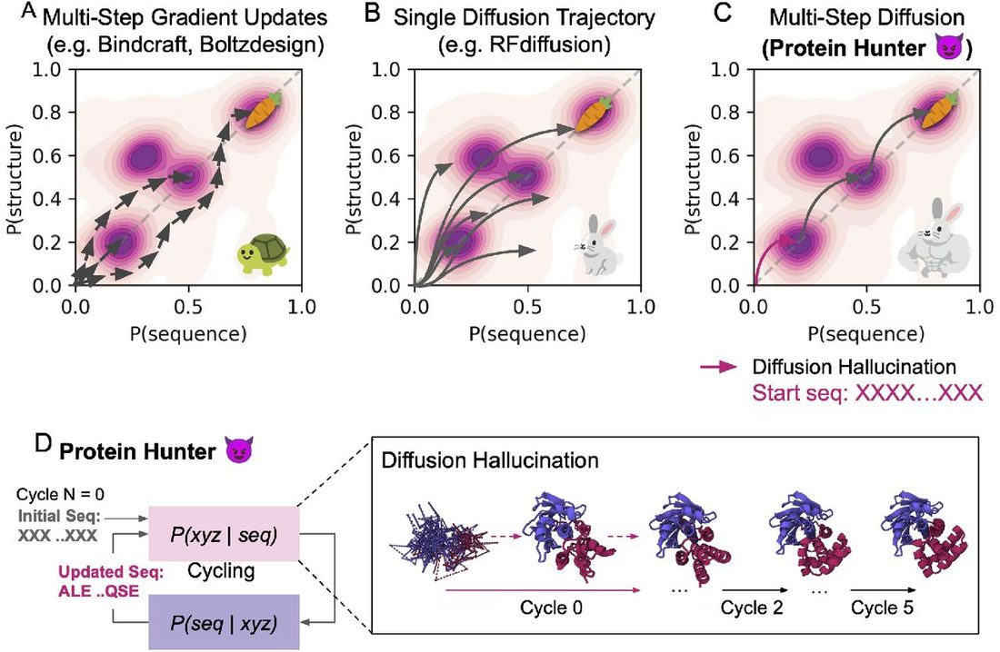
For cycler designs, we generated one sequence per cycle and evaluated its success, rather than sampling multiple sequences, reflecting that the cycling process itself optimizes sequence space. 2 Unlike AF2cycler, with limited hallucination ability in the structure module, we find Protein Hunter does not require a starting point and the sequence can be replaced completely at each iteration.
4 Results
4.1 Protein Hunter Generates Protein Backbones Using the X Token via Diffusion Hallucination
We first evaluated how sequences composed of a single amino acid differ in their propensity to hallucinate and generate designable protein structures. Sequences of histidine (H) or asparagine (N) showed the highest Spearman correlations (∼ 0.6) with the background residue–distance distribution, followed by the unknown X token (∼ 0.5) ( Fig. 4A ). To further assess their potential for binder design, we performed conditional generation using Boltz-2 and sequence redesign with SolubleMPNN, starting from single–amino-acid sequences [ Passaro et al., 2025 ]. Among all tokens, X-initiated designs achieved the highest ipTM scores and the lowest loop fractions, indicating the most compact and stable folds ( Fig. 4B,C ). AF3-style models encode unknown PDB residues as X tokens and explicitly tokenize non-canonical amino acids, D-amino acids, and ligand atoms. This enables folding of sequences containing unspecified or unconventional residues while minimizing bias from amino acid–specific features.
Across diffusion-based structure prediction models, Boltz-2 achieved the highest in silico success rate ( Fig. 7A ), with high structural confidence and low RMSD between original and redesigned structures. We hypothesize that the strong performance of Boltz-2 arises from two key features. First, Boltz-2 encodes each non-canonical residue as a single learned token, simplifying novel chemistry and allowing the X token to act as a single residue. In contrast, AF3 and Chai-1 use atom-level tokenization, which increases sampling complexity. Second, Boltz-2 applies rigid-body alignment at every reverse diffusion step constraining the denoising path and reducing inference drift while preserving structural compactness. AF3 reduces hallucination partly through fine-tuning on a distillation predictions from AF2, which in turn encourages spaghetti-like structures for low-confident regions [ Abramson et al., 2024 ]. In contrast, Boltz-2 and Chai-1, which were not fine-tuned on AF2 predictions to preserve the spaghetti-like structure, conveniently hallucinate ordered, well-packed structures in low-confidence regions.
Finally, structures generated by AF3-style models exhibited lower structural diversity than those from RFdiffusion ( Fig. 7C ), reflecting a bias toward α -helical topologies. This helical preference, common in generative models [ Dawson et al., 2017 , Lin, 2024 ], constrains fold diversity. To enrich β -sheet content, we introduced a negative helix bias into the Pairformer pair features prior to diffusion, which increased the proportion of sheet-containing samples ( Fig. 12 ).
4.2 All-Atom Protein Binder Design via Structure Prediction and Sequence Cycling Enables High In Silico Success Rates
Similar to AF2cycler [ Frank et al., 2024 ], Protein Hunter cycling structure–prediction model achieves high designability and high AF3 success rate. Initial backbones generated from the X token were often redesigned with high alanine content by ProteinMPNN, since X tokens share alanine’s backbone atoms (N, C α , C, C β ). Repeated structure–sequence cycles refine overall geometry, improve secondary-structure packing, reduce alanine bias, and yield more stable folds ( Fig. 9A ).
During unconditional generation, single-pass designs longer than ∼300 residues often exhibited pLDDT scores below 0.7, whereas cycling maintained values around 0.8 for sequences up to 700 residues, along with high designability as measured by TM-scores through joint refinement of sequence and structure( Fig. 2A,B ). For binder design ( Fig. 2C ), Protein Hunter combined with Boltz-2 achieved higher ipTM scores in 9 of 11 targets, and with Chai in 7 of 11 targets, compared to RFdiffusion, while maintaining strong pLDDT values. Furthermore, the method enables binder design for multimeric proteins ( Fig. 3A ), generating binders on TNF- α trimer surfaces without disrupting inter-trimer interactions or mispositioning them within the protein core.
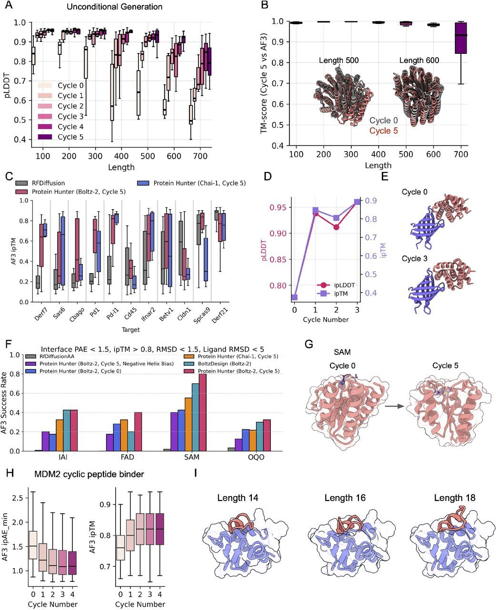
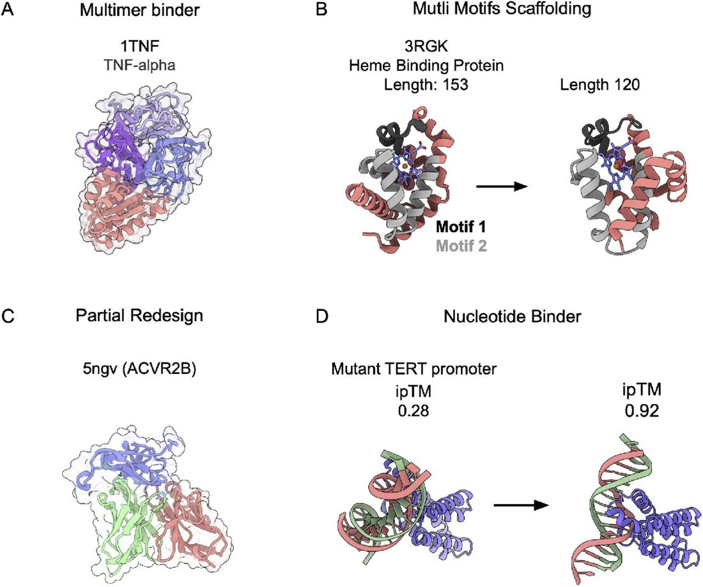
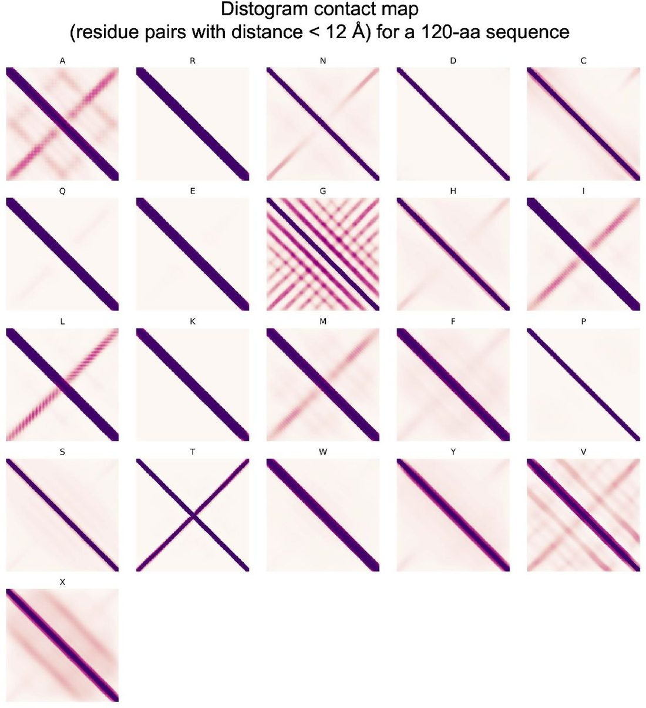
Protein Hunter also enables all-atom binder design. Using the same iterative approach on four chemically diverse targets previously tested with RFdiffusion-AA and BoltzDesign1, small-molecule binders were generated and evaluated with AlphaFold 3. Success rate is defined by backbone RMSD ≤1.5 Å, ligand RMSD ≤5 Å, interface PAE ≤1.5, and ipTM ≥ 0.8. By these criteria, Protein Hunter reached higher success rates across all targets compared with RFdiffusion-AA, BoltzDesign2, and its single-pass mode ( Figure 2F,G ). Importantly, these results highlight that iterative cycling reduces the need for extensive sequence sampling: structure and sequence are progressively co-optimized across cycles, yielding strong backbone–sequence compatibility without requiring large-scale sampling and refolding for validation.
Lastly, Protein Hunter supports the design of protein-binding macrocyclic peptides. Cyclization is implemented through cyclic positional encoding, following established methods [ Rettie et al., 2025a , Zhang et al., 2025 , Rettie et al., 2025b ]. Similar to unconditional and binder-specific generation, cyclic-sequence conditioning further enhances in silico success rates, as demonstrated in Figure 2H , which shows the MDM2 cyclic peptide binder design results, and in the varied-length peptide examples shown in Figure 2I .
4.3 Protein Hunter Generalizes to Diverse Protein Design Tasks
Protein Hunter extends to multi-motif scaffolding, partial redesign, and binder generation for diverse molecular targets. For motif scaffolding ( Fig. 3B , 13), we demonstrate a heme-binding protein in which two motifs adjacent to the heme ligand (all-atom distance < 5 Å ) were fixed while diffusion hallucination rebuilt the surrounding scaffold and termini. For partial redesign ( Fig. 3C , 14), we applied the method to the 5NGV antibody structure, retaining framework regions of the light and heavy chains while optimizing the CDRs [ Wang et al., 2025 ]. Beyond proteins, the framework also designs small-molecule, DNA, and RNA binders ( Fig. 3D ), where successive structure–sequence cycles increased pLDDT and ipTM, improving structural accuracy and predicted interaction quality.
5 Discussion
Protein Hunter unites zero-shot structure prediction with iterative sequence–structure refinement, combining the speed of generative diffusion with the precision of co-optimization. Cycling reduces biases such as alanine enrichment, improves foldability, and adding pairwise bias terms to pair representations allows control of secondary structure, for example, a negative helix bias promotes β -sheet–rich designs and further improves the diversity of structures. The diffusion hallucination process can be further steered by incorporating potential terms such as contact and pocket constraints, enabling specific guidance without retraining. Beyond binder generation, Protein Hunter readily supports multi-motif scaffolding, partial redesign, and all-atom targets, enabling catalytic-site embedding, antibody CDR optimization, and design of small-molecule or nucleic-acid binders. Future work will focus on more accurate catalytic side-chain modeling, broader secondary-structure sampling, and better coverage of diverse fold distributions. Incorporating sparse autoencoders to extract and activate fold-specific features from pair representations may further expand structural diversity. Aligning with developments in structure prediction models and strategies for sampling structures, Protein Hunter will be able to generate an even wider range of functional proteins.
7 Data and code availability
All data and source code is available at https://github.com/yehlincho/Protein-Hunter
6 Acknowledgements
We would like to thank Katelyn Campbell for helpful suggestions. Y.C. acknowledges financial support from the SBS scholarships and the Takeda Fellowship. S.O. acknowledges funding from NSF grant MCB2032259, and Amgen. We extend our special thanks to Rohith Krishna for providing the RfDiffusion-generated backbones.
A Appendix
A.1 Diffusion Hallucination from Single–Amino-Acid Sequences
To identify which single–amino-acid sequence best matches the natural protein distribution, we modeled background residue–distance statistics using the CATH database Orengo et al. [1997] , Anishchenko et al. [2021] . For each residue pair ( i, j ) we defined the absolute sequence separation
Observed C β –C β distances d for each k were binned into a 64-bin distogram spanning 2–22 Å. The background probability gives the likelihood that the distance between residues i and j falls into bin b , with
We generated 120-residue sequences composed of a single repeated amino acid (e.g., (aa) 120 ) and supplied them to the model in single-sequence mode. After three recycling steps, we extracted pairwise feature representations from the Boltz Pairformer trunk and computed their Spearman correlation with the background distribution. The resulting distogram maps are shown in Fig. 4 , and an example of single–amino-acid sequence hallucination targeting CLDN1 is shown in Fig. 5 .
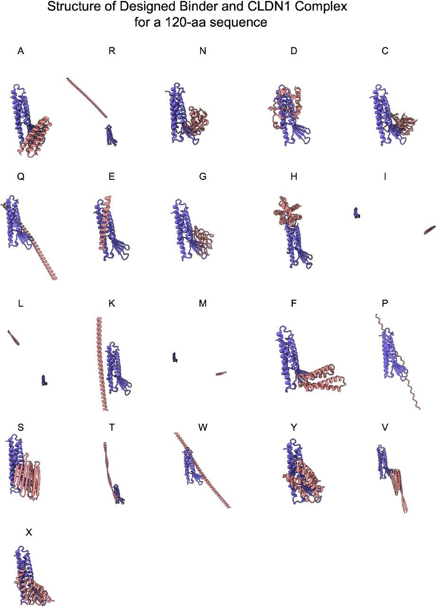
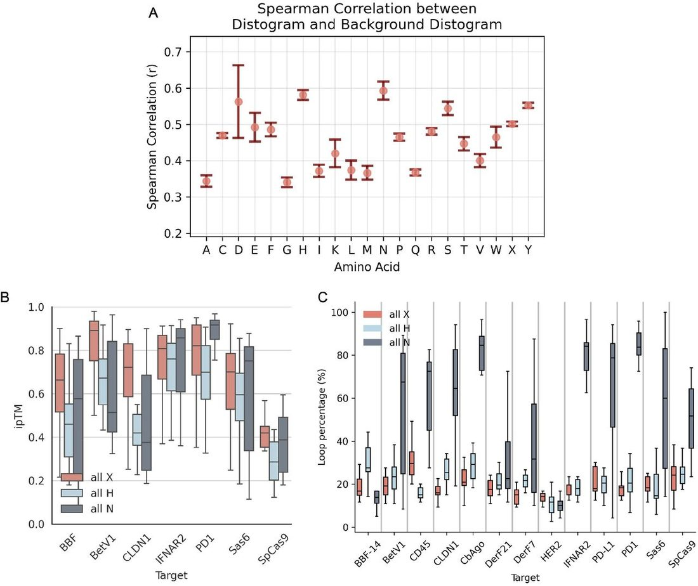
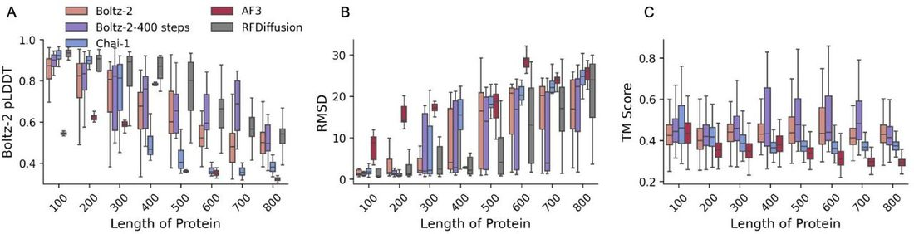
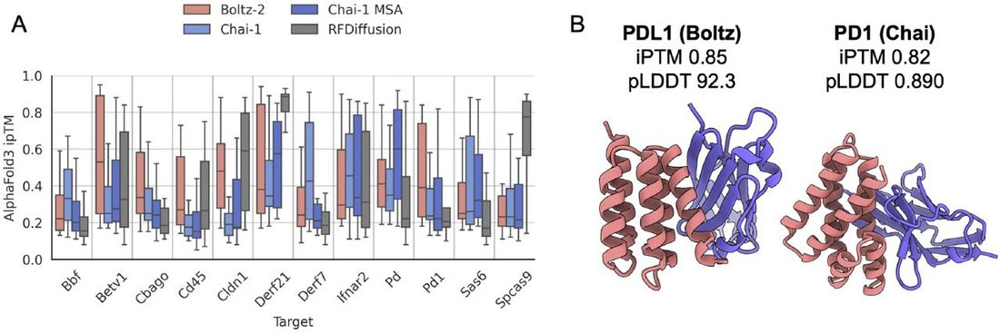
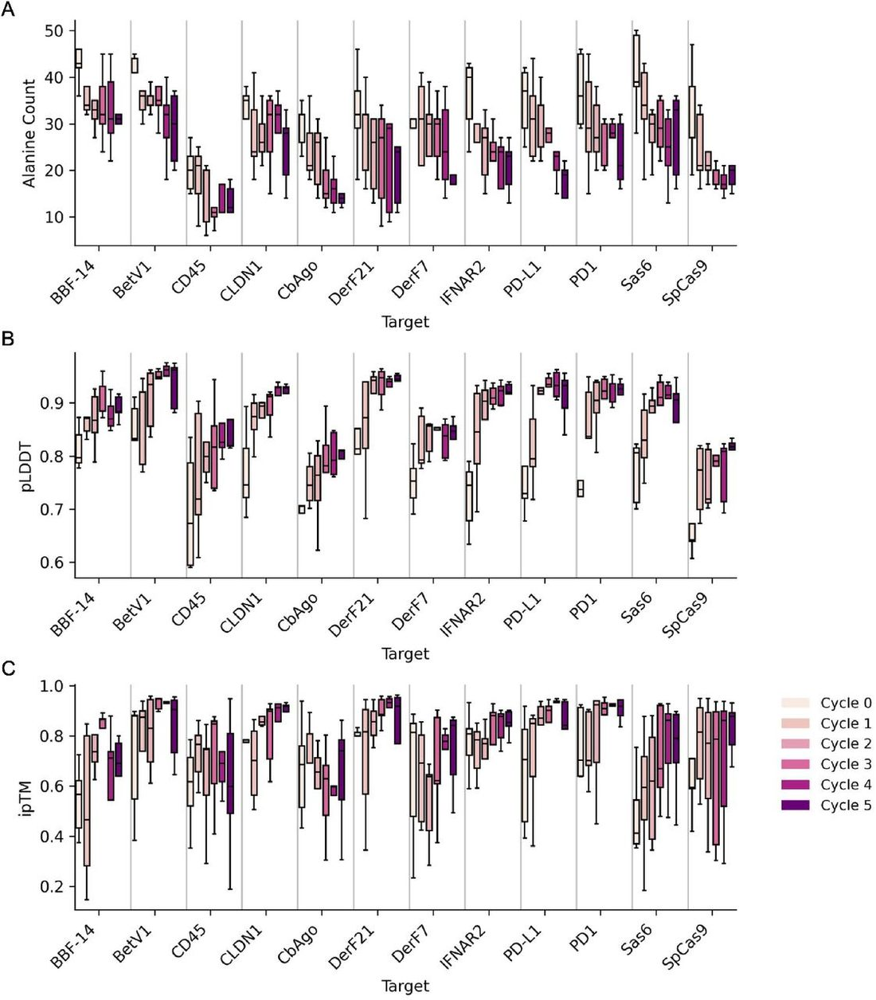
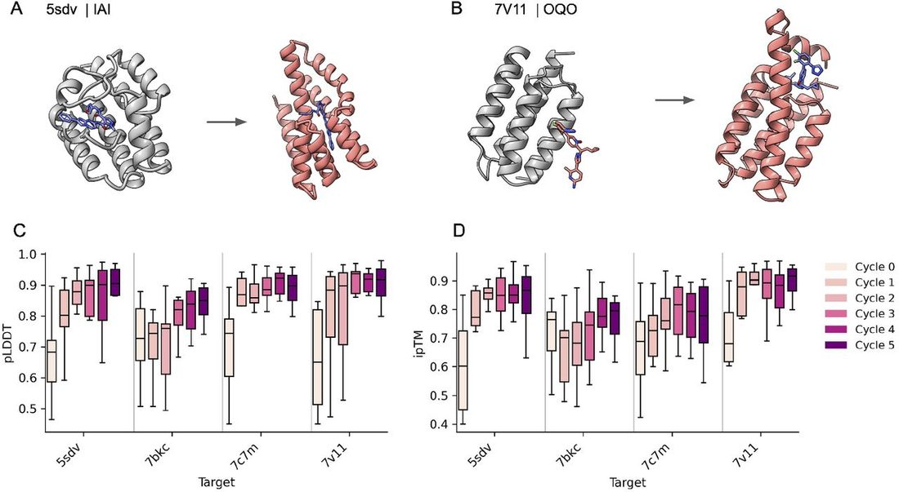
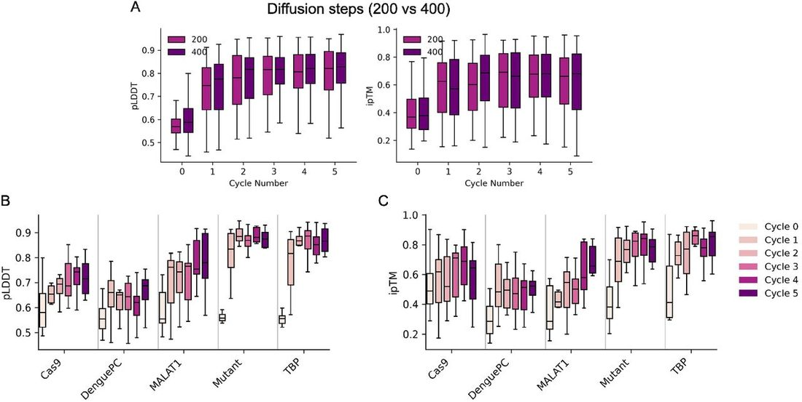
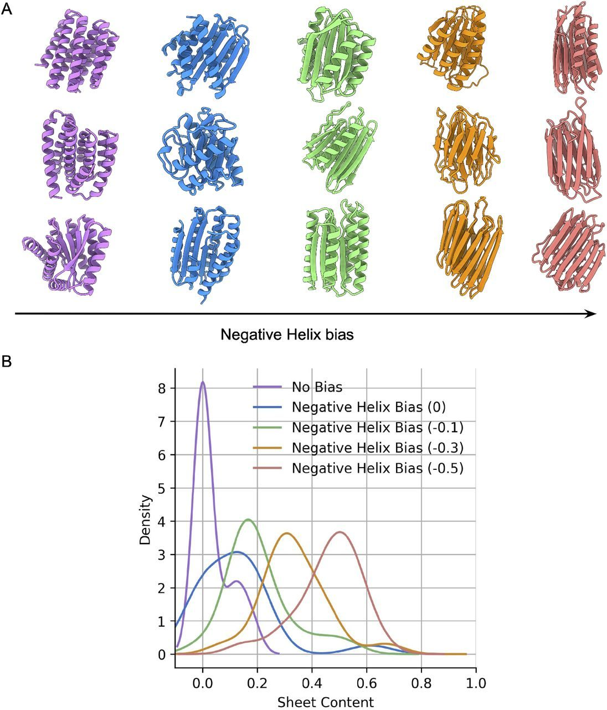
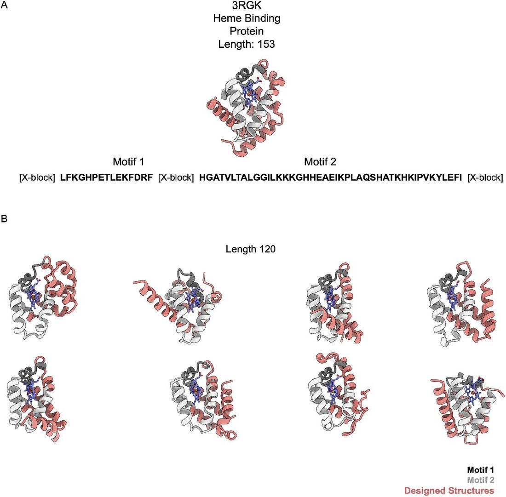
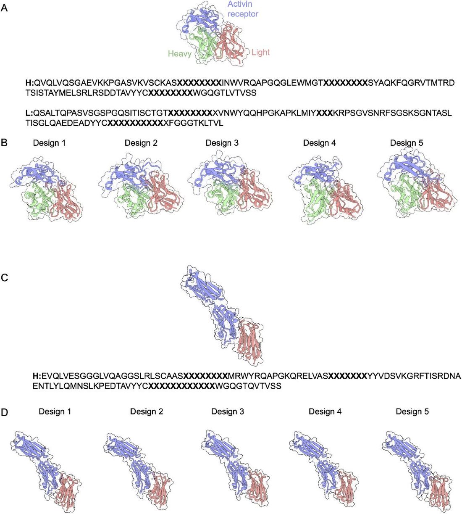
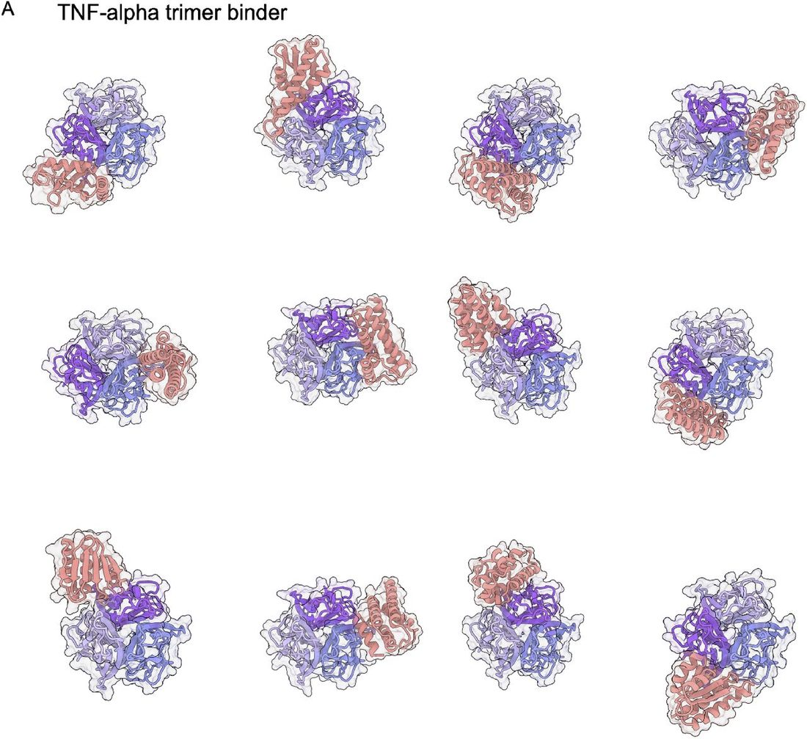
References
- ↵ Josh Abramson , Jonas Adler , Jack Dunger , Richard Evans , Tim Green , Alexander Pritzel , Olaf Ronneberger , Lindsay Willmore , Andrew J Ballard , Joshua Bambrick , et al. Accurate structure prediction of biomolecular interactions with alphafold 3 . Nature , 630 ( 8016 ): 493 – 500 , 2024 . OpenUrl CrossRef PubMed
- ↵ Woody Ahern , Jason Yim , Doug Tischer , Saman Salike , Seth M Woodbury , Donghyo Kim , Indrek Kalvet , Yakov Kipnis , Brian Coventry , Han Raut Altae-Tran , et al. Atom level enzyme active site scaffolding using rfdiffusion2 . bioRxiv , pages 2025 – 04 , 2025 .
- ↵ Sumukh K Aithal , Pratyush Maini , Zachary Lipton , and J Zico Kolter . Understanding hallucinations in diffusion models through mode interpolation . Advances in Neural Information Processing Systems , 37 : 134614 – 134644 , 2024 . OpenUrl
- ↵ Ivan Anishchenko , Samuel J Pellock , Tamuka M Chidyausiku , Theresa A Ramelot , Sergey Ovchinnikov , Jingzhou Hao , Khushboo Bafna , Christoffer Norn , Alex Kang , Asim K Bera , et al. De novo protein design by deep network hallucination . Nature , 600 ( 7889 ): 547 – 552 , 2021 . OpenUrl CrossRef PubMed
- ↵ Jasper Kenneth Veje Butcher , Rohith Krishna , Raktim Mitra , Rafael Isaac Brent , Yanjing Li , Nathaniel Corley , Paul Kim , Jonathan Funk , Simon Valentin Mathis , Saman Salike , et al. De novo design of all-atom biomolecular interactions with rfdiffusion3 . bioRxiv , pages 2025 – 09 , 2025 .
- Yehlin Cho , Sergey Ovchinnikov , and Christopher Frank . Enhancing protein design robustness through noise-informed sequence design . In ICML 2024 AI for Science Workshop .
- ↵ Yehlin Cho , Martin Pacesa , Zhidian Zhang , Bruno E Correia , and Sergey Ovchinnikov . Boltzdesign1: Inverting all-atom structure prediction model for generalized biomolecular binder design . bioRxiv , pages 2025 – 04 , 2025 .
- ↵ Regev Cohen , Idan Kligvasser , Ehud Rivlin , and Daniel Freedman . Looks too good to be true: An information-theoretic analysis of hallucinations in generative restoration models . Advances in Neural Information Processing Systems , 37 : 22596 – 22623 , 2024 . OpenUrl
- ↵ Natalie L Dawson , Tony E Lewis , Sayoni Das , Jonathan G Lees , David Lee , Paul Ashford , Christine A Orengo , and Ian Sillitoe . Cath: an expanded resource to predict protein function through structure and sequence . Nucleic acids research , 45 ( D1 ): D289 – D295 , 2017 . OpenUrl CrossRef PubMed
- ↵ Christopher Frank , Dominik Schiwietz , Lara Fuß , Sergey Ovchinnikov , and Hendrik Dietz . Alphafold2 refinement improves designability of large de novo proteins . bioRxiv , pages 2024 – 11 , 2024 .
- ↵ Benjamin Fry , Kaia Slaw , and Nicholas F Polizzi . Zero-shot design of drug-binding proteins via neural selection-expansion . bioRxiv , pages 2025 – 04 , 2025 .
- ↵ John Jumper , Richard Evans , Alexander Pritzel , Tim Green , Michael Figurnov , Olaf Ronneberger , Kathryn Tunyasuvunakool , Russ Bates , Augustin Žídek , Anna Potapenko , et al. Highly accurate protein structure prediction with alphafold . nature , 596 ( 7873 ): 583 – 589 , 2021 . OpenUrl CrossRef PubMed
- ↵ Tanja Kortemme . De novo protein design—from new structures to programmable functions . Cell , 187 ( 3 ): 526 – 544 , 2024 . OpenUrl CrossRef PubMed
- ↵ Zeming Lin . Predictive and Generative Models of Protein Sequence and Structure . New York University , 2024 .
- ↵ Christine A Orengo , Alex D Michie , Susan Jones , David T Jones , Mark B Swindells , and Janet M Thornton . Cath–a hierarchic classification of protein domain structures . Structure , 5 ( 8 ): 1093 – 1109 , 1997 . OpenUrl CrossRef PubMed
- Martin Pacesa , Lennart Nickel , Christian Schellhaas , Joseph Schmidt , Ekaterina Pyatova , Lucas Kissling , Patrick Barendse , Jagrity Choudhury , Srajan Kapoor , Ana Alcaraz-Serna , et al. Oneshot design of functional protein binders with bindcraft . Nature , pages 1 – 10 , 2025 .
- ↵ Xingjie Pan and Tanja Kortemme . Recent advances in de novo protein design: Principles, methods, and applications . Journal of Biological Chemistry , 296 , 2021 .
- ↵ Saro Passaro , Gabriele Corso , Jeremy Wohlwend , Mateo Reveiz , Stephan Thaler , Vignesh Ram Somnath , Noah Getz , Tally Portnoi , Julien Roy , Hannes Stark , et al. Boltz-2: Towards accurate and efficient binding affinity prediction . BioRxiv , pages 2025 – 06 , 2025 .
- ↵ Stephen A Rettie , Katelyn V Campbell , Asim K Bera , Alex Kang , Simon Kozlov , Yensi Flores Bueso , Joshmyn De La Cruz , Maggie Ahlrichs , Suna Cheng , Stacey R Gerben , et al. Cyclic peptide structure prediction and design using alphafold2 . Nature Communications , 16 ( 1 ): 4730 , 2025a . OpenUrl PubMed
- ↵ Stephen A Rettie , David Juergens , Victor Adebomi , Yensi Flores Bueso , Qinqin Zhao , Alexandria N Leveille , Andi Liu , Asim K Bera , Joana A Wilms , Alina Üffing , et al. Accurate de novo design of high-affinity protein-binding macrocycles using deep learning . Nature Chemical Biology , pages 1 – 9 , 2025b .
- ↵ Chai Discovery team , Jacques Boitreaud , Jack Dent , Matthew McPartlon , Joshua Meier , Vinicius Reis , Alex Rogozhonikov , and Kevin Wu . Chai-1: Decoding the molecular interactions of life . BioRxiv , pages 2024 – 10 , 2024 .
- Susana Vázquez Torres , Philip JY Leung , Preetham Venkatesh , Isaac D Lutz , Fabian Hink , Huu-Hien Huynh , Jessica Becker , Andy Hsien-Wei Yeh , David Juergens , Nathaniel R Bennett , et al. De novo design of high-affinity binders of bioactive helical peptides . Nature , 626 ( 7998 ): 435 – 442 , 2024 . OpenUrl CrossRef PubMed
- ↵ Rubo Wang , Fandi Wu , Jiale Shi , Yidong Song , Yu Kong , Jian Ma , Bing He , Qihong Yan , Tianlei Ying , Xingyu Gao , et al. A generative foundation model for antibody design . bioRxiv , pages 2025 – 09 , 2025 .
- ↵ Joseph L Watson , David Juergens , Nathaniel R Bennett , Brian L Trippe , Jason Yim , Helen E Eisenach , Woody Ahern , Andrew J Borst , Robert J Ragotte , Lukas F Milles , et al. De novo design of protein structure and function with rfdiffusion . Nature , 620 ( 7976 ): 1089 – 1100 , 2023 . OpenUrl CrossRef PubMed
- Jeremy Wohlwend , Gabriele Corso , Saro Passaro , Noah Getz , Mateo Reveiz , Ken Leidal , Wojtek Swiderski , Liam Atkinson , Tally Portnoi , Itamar Chinn , et al. Boltz-1 democratizing biomolecular interaction modeling . BioRxiv , pages 2024 – 11 , 2025 .
- ↵ Chenhao Zhang , Zhenyu Xu , Kang Lin , Ning Zhu , Chengyun Zhang , Wen Xu , Jingjing Guo , An Su , Chengxi Li , and Hongliang Duan . Cycledesigner: Leveraging cycrfdiffusion and highfold to design cyclic peptide binders for specific targets . Journal of chemical information and modeling , 65 ( 12 ): 6155 – 6165 , 2025 . OpenUrl PubMed